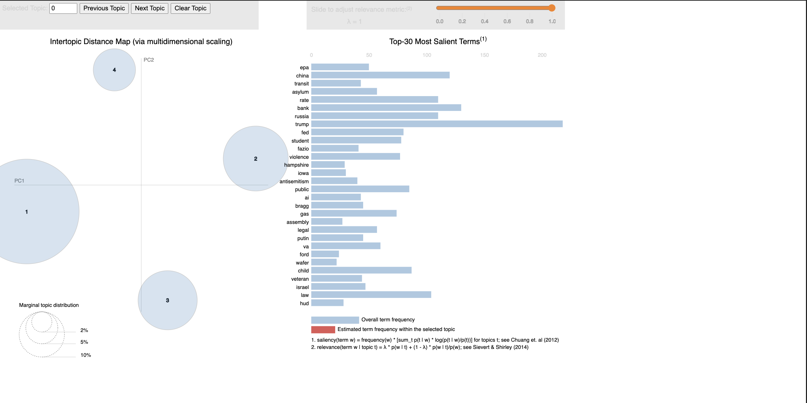
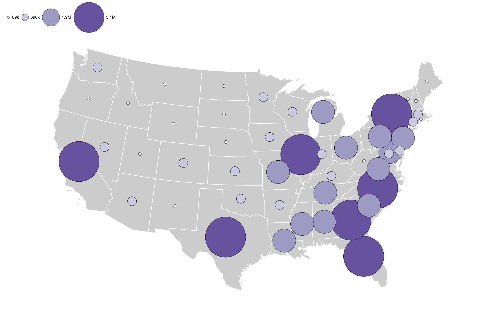
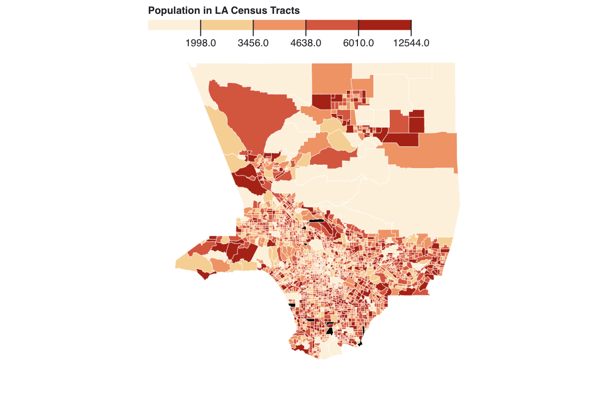
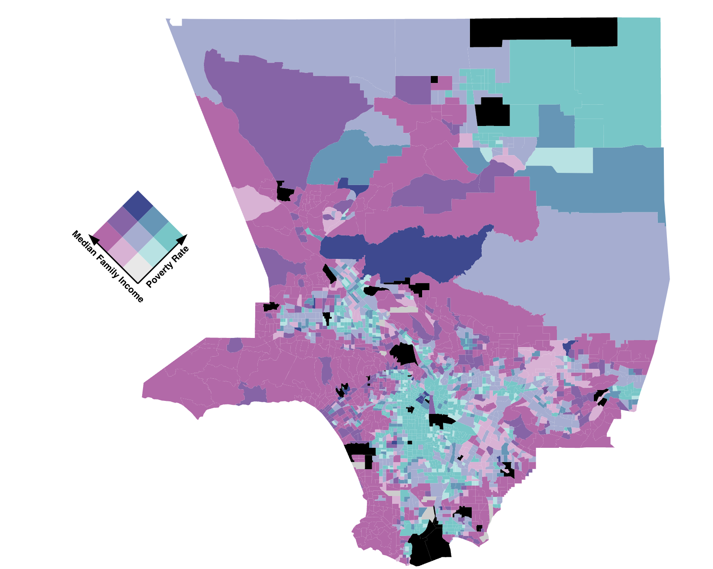
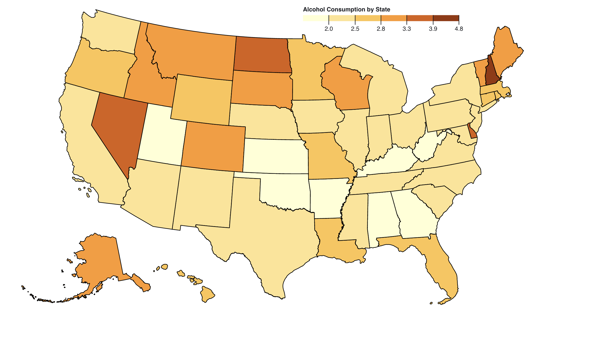

Isaac McSorley | Portfolio
Hello World!
I'm Isaac McSorley

About Me
Hi, I'm Isaac! I'm a Master student at the University of Iowa studying Business Analytics.
I have experience cleaning, engineering, and modeling data using Python, R, and SQL.
When I'm not coding, I enjoy playing golf, working out, eating good food, or hanging out with friends. I also love to take drone videography.
Please check out my experience and projects below and feel free to reach out.
Experience
JP Morgan Chase & Co.
Corporate Summer Analyst - Tampa, FL
JP Morgan Chase & Co.
Global Finance Summer Analyst - Chicago, IL
Spartan Forge - Deer Movement Prediction App (Startup)
Machine Learning Research Intern - Remote
The University of Iowa College of Nursing
Database Developer - Iowa City, IA
HNI Corporation
Data Analyst Intern - Muscatine, IA
Bison Lawn Care
Business Owner - New London, IA
These diverse experiences at both fortune 500 companies and startup companies alike have enabled me to develop a broad skill set, making me a well-rounded individual with knowledge in many different fields and working with both very large and very small companies. Although I am still young, I have had many experiences that have taught me a variety of skills to prepare me for the world of business.
Skills Used: Microsoft Access, SQL Queries, VBA, Relational Schema
For the University of Iowa's Nursing Residency Program, I designed a relational Microsoft Access database that streamlined their data management process. By integrating their customer and sales information, as well as creating custom forms and automated reports, I reduced manual labor by over 50%. The database allows the company to track customers, manage invoicing, and gain valuable insights through easy-to-use reports. With the ability to search and edit customer data and create professional invoices, this database provides a comprehensive solution for the company's data management.

This sentiment analysis project focused on analyzing sentiment in articles scraped from The Hill, a
prominent news outlet covering politics and government affairs in the United States. I explored how
sentiment varies across different topic categories such as News, Policy, Business, Opinion, Events, and Jobs.
Through web scraping and data analysis, I aimed to provide insights into the political landscape and contribute
to the field of text analytics. The repository contains code, documentation, and findings, inviting others to learn
and contribute to our work in sentiment analysis.
This project used supervised machine learning to analyze credit card company data
and build a model to predict customer churn. Exploratory analysis revealed that
customers with lower transaction numbers and amounts, lower revolving balances,
and fewer total products were more likely to churn.
The best model, a gradient boosting model, had an AUC of .9911 and an average error rate of 7.6%. The model
had a precision of 96% and a recall of 85.7%. The conclusion and recommendations
suggest that the company should offer incentives such as cashback rewards and travel
amenities to retain customers.

This project aims to ease the airport experience for travelers by providing statistical data to help
choose an airline and day to fly from Chicago O'Hare International Airport.
The project uses data from the 2015 Kaggle data on Commercial Air Flight Delays,
which includes over 5 million commercial flights.
The report provides an in-depth analysis
of the data, and frequent fliers of O'Hare can benefit from it. The website provides screenshots of the
final report.
Geovisualization Portfolio
All mapping was done using javascript and the d3 library. I utilized Observable Notebooks to create many of the maps. Many are assignments from my Geographical Visualization class.

The spatial patterns reveal that bikeshare activity primarily occurs in a north-south direction within Chicago, concentrating around the downtown Loop area and Navy Pier. These patterns suggest the influence of location characteristics such as density of businesses, traffic, bikeshare routes, and availability of Divvy bikes.

This graduated symbol map illustrates the distribution of the Black population in the United States using proportional circles. The spatial patterns reveal higher concentrations in the Southeast and urban areas nationwide. These patterns provide insight into the historical, cultural, and socio-economic factors shaping population distributions.

This chloropleth map shows the population in Los Angeles County California. It allows the user to see which areas of the county contain a higher number of residents. This shows although some areas are very large in geographic size, they can still have a lower population, while other small areas contain a large number of people.

This bivariate choropleth map highlights the inverse relationship between Median Family Income and Poverty Rate in LA County census tracts. Darker colors represent areas with low income and high poverty, particularly in the middle south and northeast corners of the county.

The overarching goal of this project is to analyze alcohol consumption trends for each state in the US between the years 2006-2016. We want to gain an understanding of the drinking practices of each state, as well as overall consumption trends.
The Small Multiples Mapping of Florida data is a comprehensive visual representation that showcases key demographic and
housing statistics at the county level. This interactive map features three distinct data points: population density
(measured in population per square mile), median age, and the number of owner-occupied to renter-occupied housing.
By presenting these essential metrics, the map offers valuable insights into the regional trends and variations across Florida,
enabling policymakers, researchers, and the general public to better understand the underlying patterns and dynamics within the
state's communities.
)
){kind=link}
){kind=link}
){kind=link}
){kind=link}